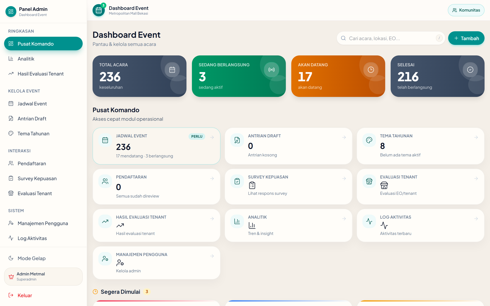
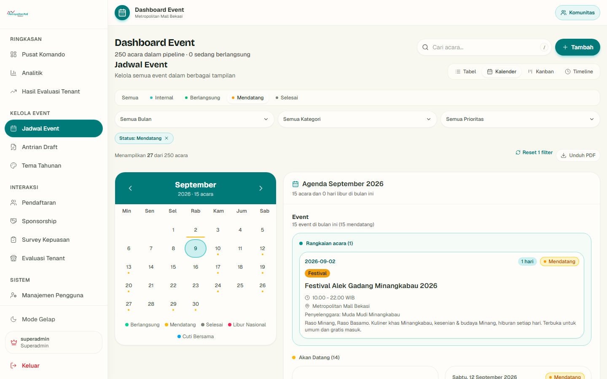
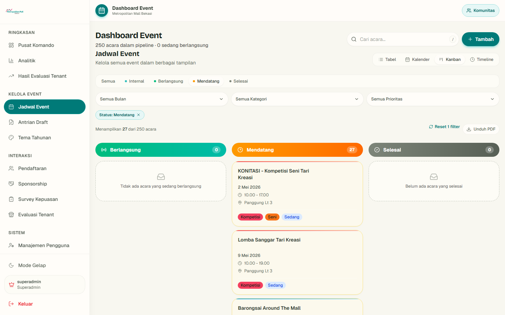
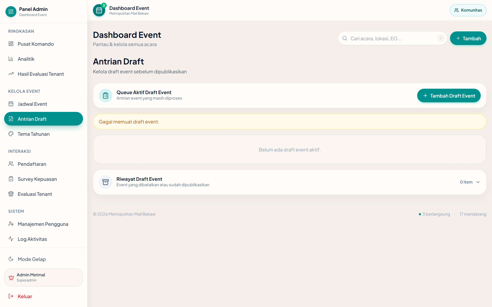
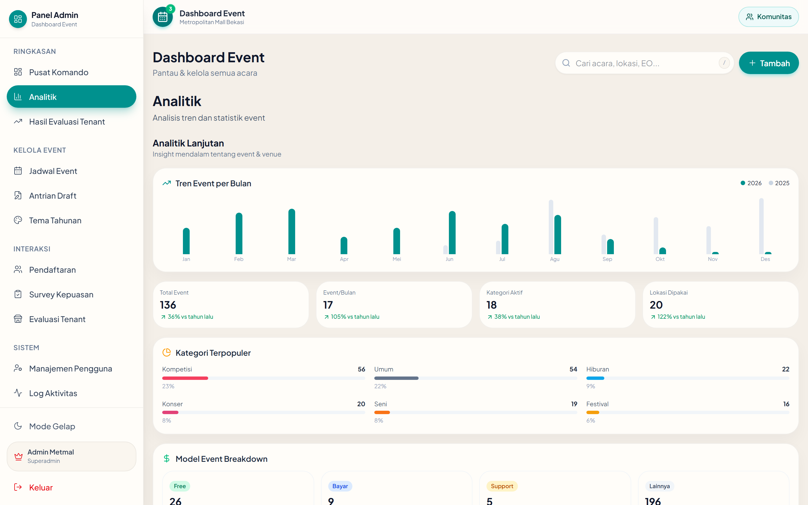

Dashboard calendar event
Sistem event
Kalender mall — bulan ini
1234567
891011121314
15161718192021
Metropolitan Mall Bekasi

Command center — statistik, draft, dan aktivitas hari ini
Total eventBerlangsungMendatangSelesai
Kenapa sistem ini ada
Jadwal akuntabel,
bukan catatan lepas
Satu jadwal, empat cara melihat

Tabel — daftar lengkap

Kalender — bentrok terlihat

Kanban — status berjalan

Timeline — alur waktu
Akuntabilitasnya terlihat
Dari draft dikurasi jadi jadwal resmi

Draft — antrian kurasi
Event — jadwal resmi
Bukti, bukan janji
Komunitas terbukti aktif
KomunitasSekolah & kampusEO & brand
Wajah publiknya

Community hub

Jadwal publik

Galeri bukti
Satu alur tertutup
Daftar, survei, galeri — satu alur

Formulir publik

Hasil survei masuk
Angkanya dari sistem
Dibaca dari analitik

Analitik — tren dan sebaran event
Presentasi internal
Metropolitan Mall Bekasi
Community Space — sistem operasi event